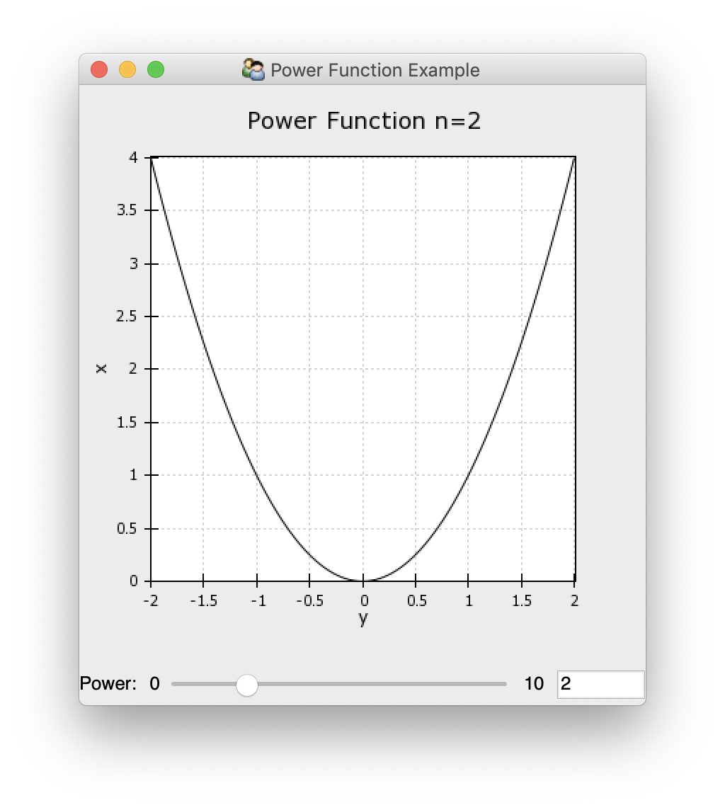

Plots and Plot Data¶
The primary interface that Chaco presents is the Plot
class. Informally you can think of this as a single set of shared axes that
contain a collection of renderers within that view. It comes pre-configured
with most of the decorations that you might want, such as grids, titles and
legends, and those can easily be modified if desired.
Plots Are Components¶
The Plot class is a subclass of the
Component class, and so you can display a plot
in a TraitsUI using a ComponentEditor
as you would any other Enable Component.
Usually this looks something like:
class PowerFunctionExample(HasStrictTraits):
""" Display a plot of a power function. """
#: The plot holding the visualization
plot = Instance(Plot)
#: The power of the monomial to use.
power = Range(0, 5, value=2)
),
show_labels=False,
),
resizable=True,
title="Power Function Example",
)
if __name__ == "__main__":
view = PowerFunctionExample()
view.configure_traits()
Because plots tend to consume a large amount of vertical space you typically want to avoid displaying it in a group which shows labels on the left-hand side, as this creates a lot of empty space. By grouping in a way like what is shown above, you get the following, more pleasing layout:
{kind=link}
Since Plot subclasses
Component, you have the basic styling options
that Component gives you, such as background
color, padding, borders, etc. However Plot assumes
that you have substantial padding around it as the plot titles, axis ticks
and axis labels are rendered in the padding around the plot by default; but
you can frequently get more compact layout by reducing the padding on the
sides which do not have labels.
Similarly, this means that you can use a plot in the same way that you would
any other Enable component, and it will work with Enable tools. So you could
have multiple Container or Canvas
and attach MoveTool and
ResizeTool to them to allow the user
complete control over the location and size of the plots.
Plot Data¶
The data for a Plot is stored in an instance of an
AbstractPlotData (and almost always
ArrayPlotData). The plot data classes
provide a namespace that maps names to data so that the
Plot can refer to the data by name when constructing
and modifying plot renderers.
Usually the raw data is added to the plot data during initialization, and the assigned names used as the data parameters for the plot factories:
class PowerFunctionExample(HasStrictTraits):
""" Display a plot of a power function. """
#: The plot holding the visualization
plot = Instance(Plot)
#: The power of the monomial to use.
power = Range(0, 5, value=2)
#: The x-values to plot.
x = Array(shape=(None,), dtype="float")
# Trait defaults --------------------------------------------------------
def _plot_default(self):
y = self.x ** self.power
plot_data = ArrayPlotData(x=self.x, y=y)
plot = Plot(plot_data)
plot.plot(("x", "y"), "line", name="power function", color="auto")
# configure the plot
plot.padding_top = 25
plot.border_visible = False
plot.index_grid.visible = False
# Trait change handlers -------------------------------------------------
After raw data has been added to the plot, it can be updated via the
set_data() method:
@on_trait_change("x")
def _update_data(self):
y = self.x ** self.power
self.plot.data.update_data(x=self.x, y=y)
Sometimes it is convenient to update multiple data values at the same
time, and in this case there is the
update_data() method:
@on_trait_change("power")
def _update_title(self):
self.plot.title = "Power Function n={}".format(self.power)
Peforming an update rather than multiple individual data setting operations is preferable, where possible, since it triggers a single combined update on any plots that are listening for changes to the data rather than many smaller updates.
Plot Factory Methods¶
The Plot class allws you to add multiple plots
of different types to the visualization your are constructing. It does
this via a family of factory methods, the most commonly used of which is
the plot() method, but which include methods
for image plots, contour plots, candle plots and so on.
All of these methods share that they expect parameters for:
- data
Either a name or a tuple of data names from the plot data that should be used in the plot. The exact interpretation and number of data values expected varies from method to method.
- name
A name to be given to the renderer or renderers created by the method. The renderer can be retrieved from the
Plotusing its name. If a name is not given, one is auto-generated.- origin
An indication of the orientation of the plot. This is the corner of the plot where the origin is located when looking at data in the first quadrant (positive x and y).
- **styles
Keyword arguments that are passed directly through to the plot renderer, most commonly used to set things like colors, line styles, marker types, and so on.
Other common arguments that some, but not all, factory methods take include whether to use linear or logarithmic axes, the bounds of image or contour data in data space, and colormap information.
The plot factory methods all return a list of plot renderers, all of which are associated with the given name.
The plot factory methods are:
plot()The method for creating different types of XY plot subclasses. In adddition to the parameters listed above, this takes a
typeargument, which is a string naming the type of plot renderer to create, such asline(the default),scatter,bar, and so on. When called with many parameters, this method may create multiple plot renderers of the same type.img_plot()The method for creating image plots. If the data has a shape of (N, M, 3) or (N, M, 4) then it is treated as RGB or RGBA data, otherwise for (N, M) shaped data a colormap will be applied. This method can be given information about the extent of the data in the index data space. This can come from a named data source, from a hard-coded array of values, or from a (low, high) tuple. If nothing is supplied then the bounds for an image with N rows and M columns are (0, M) in the x direction an (0, N) in the y direction.
contour_plot()The method for creating contour plots. Like the
plot()method this takes a type argument to select between a"line"contour plot and a filled"poly"polygon contour plot. This method can be given information about the position of the data in the x and y data spaces. This can come from a named data source, from a hard-coded array of values, or from a (low, high) tuple. If nothing is supplied then the locations of data points for an image with N rows and M columns are (0, 1, …, M-1) in the x direction an (0, 1, …, N-1) in the y direction.candle_plot()This method creates various styles of plots with error bars. The type is inferred from the number of data values passed. The first argument is always the index, but the remaining arguments are variously interpreted as min and max values for bar and whiskers, plus an optional central value. It is up to the calling code to correctly derive the data arrays: no aggregation is performed by the plot.
quiverplot()The method creates a plot that places arrows at locations determined by a list of x and y points. It expects three data values: two arrays of length N for the points, and a third (N, 2) array of direction vectors for the arrows.
plot_1d()The method for creating different types of 1D plot subclasses. In adddition to the parameters listed above, this takes a
typeargument, which is a string naming the type of plot renderer to create, such asscatter_1d(the default),line_scatter_1d,textplot_1d, and so on.
The plot renderers for a Plot instance are
available via the plots attribute, which
is a dictionary mapping plot names to a list of plots that match
that name. Once obtained, they can have styling attributes changed
or otherwise be manipulated. In particular, since the plot renderers
are alse enable.component.Component subclasses, they can
have tools attached to them and otherwise be used as a component
might be.
Plot renderers can be removed by calling the
delplot() method with arguments of the
names of the plots to be removed. All plot renderers with
matching names will be deleted.
Plot renderers can also be shown and hidden as groups by name using
the hideplot() and
showplot() methods.
Plot Configuration¶
Since Plot is a subclass of
Component the options for changing background
and border properties that Component
provides are available.
The Plot class comes pre-configured to display
basic plots in a reasonably clean way: plots are provided with axes and
grids by default, but not with any other sort of decoration. However
it is straightforward to remove these, or to add other basic decoration
such as titles and legends if they are desired.
Title characteristics can be set directly via attributes such as
title_text,
title_font,
title_color,
title_angle, and
title_position. The title text can also be set
via the convenience property title, which has the
added side-effect of hiding the title if the text is the empty string.
def _plot_default(self):
y = self.x ** self.power
plot_data = ArrayPlotData(x=self.x, y=y)
plot = Plot(plot_data)
plot.plot(("x", "y"), "line", name="power function", color="auto")
# configure the plot
plot.padding_top = 25
plot.border_visible = False
plot.index_grid.visible = False
plot.value_grid.visible = False
plot.legend.bgcolor = (0.9, 0.9, 0.9, 0.5)
plot.legend.visible = True
Title text and other attributes can be updated dynamically and the plot will update correctly to display the modified label.
view = View(
VGroup(
The plot class also provides a Legend instance
that is hidden by default. It can be shown by toggling the visibility
of the legend. The positioning of the legend relative to the plot can be
set via the legend_alignment trait. Additional
configuration can be performed via the Legend class
up to and including replacing it with a custom Legend
subclass.
def _plot_default(self):
y = self.x ** self.power
plot_data = ArrayPlotData(x=self.x, y=y)
plot = Plot(plot_data)
plot.plot(("x", "y"), "line", name="power function", color="auto")
# configure the plot
plot.padding_top = 25
plot.border_visible = False
plot.index_grid.visible = False
plot.value_grid.visible = False
plot.index_axis.title = "y"
plot.value_axis.title = "x"
return plot
Axes and grids can be accessed either as “index” and “value” or “x” and “y” depending on how the code is working with them. In general it is preferable to use “index” and “value” as this takes into account the orientation of the plot. Axes and grids can be removed by setting their visibility to False, or setting the appropriate trait to None. Axes and grids have many configuration options, detailed in their documentation.